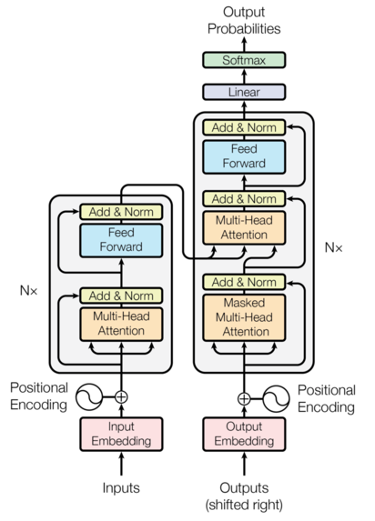

8 案例Transformer机器翻译模型
学习目标¶
- 了解有关机器翻译的知识
- 了解seq2seq架构
- 掌握使用Transformer构建机器翻译模型的实现过程
1 Transformer架构¶

Transformer模型架构分析
- 从图中可知, Transformer模型架构, 大范围内包括两部分分别是encoder(编码器)和decoder(解码器), 编码器和解码器的内部实现都使用了注意力机制实现, 这里它要完成的是一个德文到英文的翻译: Willkommen in peking → welcome to BeiJing. 编码器首先处理中文输入"Willkommen in peking", 通过Transformer内部的注意力机制提取信息之后的输出张量，就是一个中间语义张量c, 接着解码器将使用这个中间语义张量c以及每一个时间步的目标语言的语义张量, 逐个生成对应的翻译语言.
2 案例介绍¶
2.1 数据集:¶
- 使用的是torchtext中自带的数据集Multi30k, 直接可以使用内置的API函数即可下载
# 默认下载的路径为: /root/.torchtext/cache/Multi30k
└── Multi30k
├── mmt16_task1_test.tar.gz
├── test.de
├── test.en
├── train.de
├── train.en
├── training.tar.gz
├── val.de
├── val.en
└── validation.tar.gz
2.2 机器翻译过程¶
- 第一步: 导入必备的工具包
- 第二步: 导入Multi30k数据集并做基本处理
- 第三步: 构建Transformer模型
- 第四步: 定义mask的函数, 创建对应的不同的mask
- 第五步: 定义批次数据处理的回调函数
- 第六步: 构建训练函数和评估函数
- 第七步: 训练Transformer模型
- 第八步: 进行解码生成目标语言语句
- 第九步: 模型的保存和重加载
3 案例实现步骤¶
1 导入必备的工具包¶
import torch
import torch.nn as nn
import math
from torchtext.data.utils import get_tokenizer
from torchtext.vocab import build_vocab_from_iterator
from torchtext.datasets import Multi30k
from typing import Iterable, List
from torch import Tensor
from torch.nn import Transformer
from torch.nn.utils.rnn import pad_sequence
from torch.utils.data import DataLoader
from timeit import default_timer as timer
DEVICE = torch.device('cuda' if torch.cuda.is_available() else 'cpu')
2 导入Multi30k数据集并做基本处理¶
2.1 加载对应的tokenizer¶
# 源语言是德语
SRC_LANGUAGE = 'de'
# 目标语言是英语
TGT_LANGUAGE = 'en'
# 定义token的字典, 定义vocab字典
token_transform = {}
vocab_transform = {}
# 创建源语言和目标语言的kokenizer, 确保依赖关系已经安装
# pip install -U spacy
# python -m spacy download en_core_web_sm
# python -m spacy download de_core_news_sm
# get_tokenizer是分词函数, 如果没有特殊的则按照英语的空格分割, 如果有这按照对应的分词库返回. 比如spacy, 返回对应的分词库
token_transform[SRC_LANGUAGE] = get_tokenizer('spacy', language='de_core_news_sm')
token_transform[TGT_LANGUAGE] = get_tokenizer('spacy', language='en_core_web_sm')
2.2 构建生成分词的迭代器¶
def yield_tokens(data_iter: Iterable, language: str) -> List[str]:
# data_iter: 对象的迭代对象 Multi30k对象
# language: 对应的翻译语言 {'de': 0, 'en': 1}
language_index = {SRC_LANGUAGE: 0, TGT_LANGUAGE: 1}
# 返回对应的数据迭代器对象
for data_sample in data_iter:
# data_sample:(德文, 英文)
# data_sample:('Zwei junge weiße Männer sind im Freien in der Nähe vieler Büsche.\n', 'Two young, White males are outside near many bushes.\n')
# token_transform['de']()=['Zwei', 'junge', 'weiße', 'Männer', 'sind', 'im', 'Freien', 'in', 'der', 'Nähe', 'vieler', 'Büsche', '.', '\n']
# or token_transform['en']分别进行构造对应的字典
yield token_transform[language](data_sample[language_index[language]])
2.3 定义特殊字符并下载数据设置默认索引¶
# 定义特殊字符及其对应的索引值
UNK_IDX, PAD_IDX, BOS_IDX, EOS_IDX = 0, 1, 2, 3
# 确保标记按其索引的顺序正确插入到词汇表中
special_symbols = ['<unk>', '<pad>', '<bos>', '<eos>']
for ln in [SRC_LANGUAGE, TGT_LANGUAGE]:
# 训练数据集的迭代器,
# 数据集是用英文描述图像的英文语句, 然后人工将其翻译为德文的语句,有两个文件, 一个是train.de 一个是train.en文件,
# 然后将其构建为(德文, 英文)的形式
train_iter = Multi30k(split='train', language_pair=(SRC_LANGUAGE, TGT_LANGUAGE))
# 创建torchtext的vocab对象, 即词汇表
vocab_transform[ln] = build_vocab_from_iterator(yield_tokens(train_iter, ln), # 用于构建 Vocab 的迭代器。必须产生令牌列表或迭代器
min_freq=1,#在词汇表中包含一个标记所需的最低频率
specials=special_symbols, # 用于添加的特殊字符
special_first=True) # 指示是在开头还是结尾插入符号
# 将 UNK_IDX 设置为默认索引。未找到令牌时返回此索引
# 如果未设置，则在 Vocabulary 中找不到查询的标记时抛出 RuntimeError
for ln in [SRC_LANGUAGE, TGT_LANGUAGE]:
vocab_transform[ln].set_default_index(UNK_IDX)
3 构建Transformer模型¶
3.1 定义位置编码器类¶
class PositionalEncoding(nn.Module):
def __init__(self,emb_size: int,dropout: float, maxlen: int = 5000):
'''
emb_size: 词嵌入的维度大小
dropout: 正则化的大小
maxlen: 句子的最大长度
'''
super(PositionalEncoding, self).__init__()
# 将1000的2i/d_model变型为e的指数形式
den = torch.exp(- torch.arange(0, emb_size, 2)* math.log(10000) / emb_size)
# 效果等价与torch.arange(0, maxlen).unsqueeze(1)
pos = torch.arange(0, maxlen).reshape(maxlen, 1)
# 构建一个(maxlen, emb_size)大小的全零矩阵
pos_embedding = torch.zeros((maxlen, emb_size))
# 偶数列是正弦函数填充
pos_embedding[:, 0::2] = torch.sin(pos * den)
# 奇数列是余弦函数填充
pos_embedding[:, 1::2] = torch.cos(pos * den)
# 将其维度变成三维, 为了后期方便计算
pos_embedding = pos_embedding.unsqueeze(-2)
# 添加dropout层, 防止过拟合
self.dropout = nn.Dropout(dropout)
'''
向模块添加持久缓冲区。
这通常用于注册不应被视为模型参数的缓冲区。例如，pos_embedding不是一个参数，而是持久状态的一部分。
缓冲区可以使用给定的名称作为属性访问。
说明：
应该就是在内存中定义一个常量，同时，模型保存和加载的时候可以写入和读出
'''
self.register_buffer('pos_embedding', pos_embedding)
def forward(self, token_embedding: Tensor):
# 将token_embedding和位置编码相融合
return self.dropout(token_embedding + self.pos_embedding[:token_embedding.size(0), :])
3.2 定义词嵌入层类¶
class TokenEmbedding(nn.Module):
def __init__(self, vocab_size: int, emb_size):
'''
vocab_size:词表的大小
emb_size:词嵌入的维度
'''
super(TokenEmbedding, self).__init__()
# 调用nn中的预定义层Embedding, 获取一个词嵌入对象self.embedding
self.embedding = nn.Embedding(vocab_size, emb_size)
# 将emb_size传入类内, 变成类内的变量
self.emb_size = emb_size
def forward(self, tokens: Tensor):
# 让 embeddings vector 在增加 之后的 postion encoing 之前相对大一些的操作，
# 主要是为了让position encoding 相对的小，这样会让原来的 embedding vector 中的信息在和 position encoding 的信息相加时不至于丢失掉
# 让 embeddings vector 相对大一些
return self.embedding(tokens.long()) * math.sqrt(self.emb_size)
3.3 构建Seq2SeqTransformer模型¶
class Seq2SeqTransformer(nn.Module):
def __init__(self,num_encoder_layers, num_decoder_layers,emb_size,nhead,src_vocab_size,tgt_vocab_size,dim_feedforward = 512,dropout = 0.1):
'''
num_encoder_layers: 编码器的层数
num_decoder_layers: 解码器的层数
emb_size: 词嵌入的维度
nhead: 头数
src_vocab_size: 源语言的词表大小
tgt_vocab_size: 目标语言的词表大小
dim_feedforward: 前馈全连接层的维度
dropout: 正则化的大小
'''
# 继承nn.Module类, 一般继承习惯行的写法
super(Seq2SeqTransformer, self).__init__()
# 创建Transformer对象
self.transformer = Transformer(d_model=emb_size,
nhead=nhead,
num_encoder_layers=num_encoder_layers,
num_decoder_layers=num_decoder_layers,
dim_feedforward=dim_feedforward,
dropout=dropout)
# 创建全连接线性层
self.generator = nn.Linear(emb_size, tgt_vocab_size)
# 创建源语言的embedding层
self.src_tok_emb = TokenEmbedding(src_vocab_size, emb_size)
# 创建目标语言的embedding层
self.tgt_tok_emb = TokenEmbedding(tgt_vocab_size, emb_size)
# 创建位置编码器层对象
self.positional_encoding = PositionalEncoding(
emb_size, dropout=dropout)
def forward(self,src, trg, src_mask, tgt_mask, src_padding_mask, tgt_padding_mask, memory_key_padding_mask):
'''
src: 源语言
trg: 目标语言
src_mask: 源语言掩码
tgt_mask: 目标语言掩码
src_padding_mask: 源语言的padding_mask
tgt_padding_mask: 目标语言的padding_mask
memory_key_padding_mask: 中间语义张量的padding_mask
'''
# 获取源语言的embedding张量融合了位置编码
src_emb = self.positional_encoding(self.src_tok_emb(src))
# 获取目标语言的embedding张量融合了位置编码
tgt_emb = self.positional_encoding(self.tgt_tok_emb(trg))
# 经过Transformer进行编解码之后输出out值
outs = self.transformer(src_emb, tgt_emb, src_mask, tgt_mask, None, src_padding_mask, tgt_padding_mask, memory_key_padding_mask)
# outs值经过输出层得到最后的输出分布值
return self.generator(outs)
# 定义Transformer的编码器
def encode(self, src, src_mask):
'''
src:源语言
src_mask:源语言掩码
'''
return self.transformer.encoder(self.positional_encoding(self.src_tok_emb(src)), src_mask)
# 定义Transformer的解码器
def decode(self, tgt, memory, tgt_mask):
'''
tgt:目标语言
memory:中间语言张量输出
tgt_mask: 目标语言的掩码
'''
return self.transformer.decoder(self.positional_encoding(self.tgt_tok_emb(tgt)), memory, tgt_mask)
4 定义mask的函数, 创建对应的不同的mask¶
4.1 定义掩码¶
作用是防止模型在进行预测的过程中查看到未来的单词. 同时需要掩码来隐藏源语言和目标语言的padding tokens
def generate_square_subsequent_mask(sz):
# sz: 句子的长度
# triu生成的是上三角, 经过transpose之后变成了下三角矩阵
mask = (torch.triu(torch.ones((sz, sz), device=DEVICE)) == 1).transpose(0, 1)
# 将0的位置填充负无穷小, 将1的位置填充为0
mask = mask.float().masked_fill(mask == 0, float('-inf')).masked_fill(mask == 1, float(0.0))
return mask
def create_mask(src, tgt):
'''
src: 源语言张量形状为: [seq_length , batch_size]
tgt: 目标语言张量形状为: [seq_length , batch_size]
'''
# 获取源语言的句子长度
src_seq_len = src.shape[0]
# 获取目标语言的句子长度
tgt_seq_len = tgt.shape[0]
# 产生目标语言的掩码张量
tgt_mask = generate_square_subsequent_mask(tgt_seq_len)
# 产生源语言的掩码张量
src_mask = torch.zeros((src_seq_len, src_seq_len),device=DEVICE).type(torch.bool)
# 构建源语言的padding_mask src_padding_mask==> [batch_size, seq_len]
src_padding_mask = (src == PAD_IDX).transpose(0, 1)
# 构建目标语言的padding_mask tgt_paddig_mask ==> [batch_size, seq_len-1]
tgt_padding_mask = (tgt == PAD_IDX).transpose(0, 1)
return src_mask, tgt_mask, src_padding_mask, tgt_padding_mask
5 定义批次数据处理的回调函数¶
5.1 将字符串转化为整数的tensor张量¶
# 将句子字符转化为对应的tensor张量
def sequential_transforms(*transforms):
'''
Transformers中会传入三个迭代器:
第一个是Tokenization的,
第二个是Numericalization,
第三个是Add BOS/EOS and create tensor
'''
def func(txt_input):
# 循环三个迭代器, 第一个进行语句的分割, 第二个将对应的词语映射为对应的张量表示, 第三个是在整个句子的首尾部分添加起始和结束标志.
for transform in transforms:
txt_input = transform(txt_input)
return txt_input
return func
5.2 在句子首尾添加起始和结束符号¶
# 辅助函数, 完成句子首尾BOS/EOS的添加过程
def tensor_transform(token_ids: List[int]):
# 添加的是列表形式的数据, 将BOS和EOS添加到句子的首尾部分
return torch.cat((torch.tensor([BOS_IDX]),
torch.tensor(token_ids),
torch.tensor([EOS_IDX])))
text_transform = {}
# 循环添加源语言和目标语言
for ln in [SRC_LANGUAGE, TGT_LANGUAGE]:
text_transform[ln] = sequential_transforms(token_transform[ln], #Tokenization
vocab_transform[ln], #Numericalization
tensor_transform) # Add BOS/EOS and create tensor
5.3 数据进行批次化处理¶
# 按照批次进行源语言和目标语言的组装
def collate_fn(batch):
# 定义源语言和目标语言的批次列表
src_batch, tgt_batch = [], []
# 循环批次样本
for src_sample, tgt_sample in batch:
# 添加源语言句子到列表中
src_batch.append(text_transform[SRC_LANGUAGE](src_sample.rstrip("\n")))
# 添加目标语言句子到列表中
tgt_batch.append(text_transform[TGT_LANGUAGE](tgt_sample.rstrip("\n")))
# 将源语言和目标语言进行截断补齐 PAD_IDX=1
# src_batch的形状为: [seq_length, batch] seq_length是最长的句子长度
src_batch = pad_sequence(src_batch, padding_value=PAD_IDX)
# tgt_batch的形状为: [seq_length, batch] seq_length是最长的句子长度
tgt_batch = pad_sequence(tgt_batch, padding_value=PAD_IDX)
return src_batch, tgt_batch
6 构建训练函数和评估函数¶
6.1 实例化模型并定义损失函数和优化器¶
# 设置种子用于生成随机数，以使得结果是确定的
torch.manual_seed(0)
# 设置调用时候使用的参数
SRC_VOCAB_SIZE = len(vocab_transform[SRC_LANGUAGE])
TGT_VOCAB_SIZE = len(vocab_transform[TGT_LANGUAGE])
EMB_SIZE = 512
NHEAD = 8
FFN_HID_DIM = 512
BATCH_SIZE = 128
NUM_ENCODER_LAYERS = 3
NUM_DECODER_LAYERS = 3
# 实例化Transformer对象
transformer = Seq2SeqTransformer(NUM_ENCODER_LAYERS, NUM_DECODER_LAYERS, EMB_SIZE,
NHEAD, SRC_VOCAB_SIZE, TGT_VOCAB_SIZE, FFN_HID_DIM)
# 为了保证每层的输入和输出的方差相同, 防止梯度消失问题
for p in transformer.parameters():
if p.dim() > 1:
# 此处使用的是xavier的均匀分布
nn.init.xavier_uniform_(p)
# 如果有GPU则将模型移动到GPU上
transformer = transformer.to(DEVICE)
# 定义损失函数
loss_fn = torch.nn.CrossEntropyLoss(ignore_index=PAD_IDX)
# 定义优化器 betas: 用于计算梯度及其平方的运行平均值的系数 eps:添加到分母以提高数值稳定性
optimizer = torch.optim.Adam(transformer.parameters(), lr=0.0001, betas=(0.9, 0.98), eps=1e-9)
6.2 定义批次训练函数¶
def train_epoch(model, optimizer):
# 开启训练模式
model.train()
# 定义其实的损失值为0
losses = 0
# 获取训练数据集的迭代器, 语言对为(de, en)
train_iter = Multi30k(split='train', language_pair=(SRC_LANGUAGE, TGT_LANGUAGE))
# 加载数据, 按照一个批次一个批次进行加载, 返回一个迭代器
train_dataloader = DataLoader(train_iter, batch_size=BATCH_SIZE, collate_fn=collate_fn)
# 循环数据迭代器
for src, tgt in train_dataloader:
# 将源语言数据移动到对应的设备上去
src = src.to(DEVICE)
# 将目标语言数据移动到对应设备上去
tgt = tgt.to(DEVICE)
# 获取输入真实的张量 第一个单词到倒数第二个单词
tgt_input = tgt[:-1, :]
# 调用mask函数, 生成对应的四个mask
src_mask, tgt_mask, src_padding_mask, tgt_padding_mask = create_mask(src, tgt_input)
# 调用模型进行训练, 得到最后的张量分布
logits = model(src, tgt_input, src_mask, tgt_mask,src_padding_mask, tgt_padding_mask, src_padding_mask)
# 梯度清零
optimizer.zero_grad()
# 获取输出真实的标签数据 第二个单词到最后一个单词
tgt_out = tgt[1:, :]
# 计算损失
loss = loss_fn(logits.reshape(-1, logits.shape[-1]), tgt_out.reshape(-1))
# 反向传播
loss.backward()
# 梯度更新
optimizer.step()
# 损失值累加求和
losses += loss.item()
# 返回平均损失值
return losses / len(train_dataloader)
6.3 定义批次评估函数¶
def evaluate(model):
# 开启模型评估模式
model.eval()
# 定义起始损失值
losses = 0
# 加载验证数据集, 语言对为(de, en)
val_iter = Multi30k(split='valid', language_pair=(SRC_LANGUAGE, TGT_LANGUAGE))
# 返回验证集的数据加载器
val_dataloader = DataLoader(val_iter, batch_size=BATCH_SIZE, collate_fn=collate_fn)
# 循环验证集
for src, tgt in val_dataloader:
# 源语言数据移动到对应的设备上
src = src.to(DEVICE)
# 目标语言数据移动到对应的设备上
tgt = tgt.to(DEVICE)
# 获取输入的真实的张量
tgt_input = tgt[:-1, :]
# 调用mask函数, 产生对应的四个mask值
src_mask, tgt_mask, src_padding_mask, tgt_padding_mask = create_mask(src, tgt_input)
# 调用模型, 得到对应的输出分布值
logits = model(src, tgt_input, src_mask, tgt_mask,src_padding_mask, tgt_padding_mask, src_padding_mask)
# 获取输出的真实张量
tgt_out = tgt[1:, :]
# 计算损失值
loss = loss_fn(logits.reshape(-1, logits.shape[-1]), tgt_out.reshape(-1))
# 损失值累加, 求和
losses += loss.item()
# 求得对应的平均损失
return losses / len(val_dataloader)
7 训练Transformer模型¶
7.1 利用循环训练Transformer模型¶
# 定义epoch的次数
NUM_EPOCHS = 18
# 循环整个数据集num_epochs次
for epoch in range(1, NUM_EPOCHS+1):
# 获取开始时间
start_time = timer()
# 将整个训练数据集进行训练
train_loss = train_epoch(transformer, optimizer)
# 获取结束时间
end_time = timer()
# 将整个验证集进行评估
val_loss = evaluate(transformer)
# 打印每个epoch的训练损失, 验证损失, 和训练时间.
print((f"Epoch: {epoch}, Train loss: {train_loss:.3f}, Val loss: {val_loss:.3f}, "f"Epoch time = {(end_time - start_time):.3f}s"))
- 输出效果展示
Epoch: 1, Train loss: 5.342, Val loss: 4.138, Epoch time = 653.749s
Epoch: 2, Train loss: 3.799, Val loss: 3.370, Epoch time = 649.536s
Epoch: 3, Train loss: 3.184, Val loss: 2.921, Epoch time = 644.899s
Epoch: 4, Train loss: 2.782, Val loss: 2.642, Epoch time = 648.685s
Epoch: 5, Train loss: 2.490, Val loss: 2.453, Epoch time = 650.243s
Epoch: 6, Train loss: 2.256, Val loss: 2.321, Epoch time = 647.609s
Epoch: 7, Train loss: 2.064, Val loss: 2.210, Epoch time = 654.674s
Epoch: 8, Train loss: 1.905, Val loss: 2.132, Epoch time = 659.779s
Epoch: 9, Train loss: 1.761, Val loss: 2.070, Epoch time = 652.363s
Epoch: 10, Train loss: 1.637, Val loss: 2.016, Epoch time = 646.682s
Epoch: 11, Train loss: 1.527, Val loss: 1.977, Epoch time = 643.913s
Epoch: 12, Train loss: 1.427, Val loss: 1.970, Epoch time = 640.084s
Epoch: 13, Train loss: 1.335, Val loss: 1.964, Epoch time = 639.331s
Epoch: 14, Train loss: 1.253, Val loss: 1.936, Epoch time = 639.232s
Epoch: 15, Train loss: 1.173, Val loss: 1.928, Epoch time = 649.990s
Epoch: 16, Train loss: 1.106, Val loss: 1.909, Epoch time = 636.465s
Epoch: 17, Train loss: 1.038, Val loss: 1.905, Epoch time = 644.609s
Epoch: 18, Train loss: 0.976, Val loss: 1.914, Epoch time = 644.115s
注意: 这个训练的过程是4核8G内存的CPU服务器,大家可以更换为GPU服务器, 速度会更快.
8 进行解码生成目标语言语句¶
8.1 使用贪心算法构建生成序列函数¶
def greedy_decode(model, src, src_mask, max_len, start_symbol):
# 将对应的源语言数据移动的对应的设备上
src = src.to(DEVICE)
# 将对应的源语言的mask移动到对应的设备上
src_mask = src_mask.to(DEVICE)
# 将源语言使用模型的编码器, 得到中间语义张量 memory的形状为: [seq_len, batch_size, dim]
memory = model.encode(src, src_mask)
# 构建一个起始的二维矩阵, 然后准备开始句子的解码过程. ys形状为[1, 1]二维的
ys = torch.ones(1, 1).fill_(start_symbol).type(torch.long).to(DEVICE)
for i in range(max_len-1):
# 将中间语义张量的数据一定到对应的设备上
memory = memory.to(DEVICE)
# 生成目标语言的mask值
tgt_mask = (generate_square_subsequent_mask(ys.size(0)).type(torch.bool)).to(DEVICE)
# 调用模型的解码器进行解码 out形状为:[seq_len, 1, 512]==> [seq_len, batch_size, emb_size]
out = model.decode(ys, memory, tgt_mask)
# 输出张量进行形状的转换
out = out.transpose(0, 1)
# 经过最后输出层, 获取最后的输出概率分布 out[:, -1]形状为: [1, 512] --> [seq_len, emb_size]
# prob的形状为: [1, tgt_vocab_size]
prob = model.generator(out[:, -1])
# 在1维度上, 获取概率最大的那个就是最后预测的那个值 max返回两个值, 第一个是返回的最大值的概率, 第二个是返回最大概率的下标值.
_, next_word = torch.max(prob, dim=1)
# 获取对应的那个下标值
next_word = next_word.item()
# 拼接上一步和这一步产生的单词, 作为下一步使用的ys fill_()表示用括号中的数字去填充整个矩阵
ys = torch.cat([ys, torch.ones(1, 1).type_as(src.data).fill_(next_word)], dim=0)
if next_word == EOS_IDX:
break
return ys
8.2 定义最终的翻译转化函数¶
def translate(model: torch.nn.Module, src_sentence: str):
'''
model: 输入整个Transformer模型
src_sentence:要翻译的语句
'''
# 开启模型的评估模式
model.eval()
# 将源语句转化为对应的张量表示 起初是一维的(seq_len, ), 后经过view(-1, 1)转化为[seq_len, 1]二维的形状.
src = text_transform[SRC_LANGUAGE](src_sentence).view(-1, 1)
# src.shape==> [seq_len, 1]
num_tokens = src.shape[0]
# 创建一个全零的矩阵作为src_mask的起始矩阵
src_mask = (torch.zeros(num_tokens, num_tokens)).type(torch.bool)
# 使用贪心算法进行解码
tgt_tokens = greedy_decode(model, src, src_mask, max_len=num_tokens + 5, start_symbol=BOS_IDX).flatten()
# 现将数据从GPU上迁移到CPU上, 然后进行tensor类型转化为numpy.ndarray类型的整数值
# 使用lookup_tokens进行索引到对应字符的查找, 反转为对应的字符, 然后将句子的首尾的bos和eos替换掉, 即为解码之后的语句.
return " ".join(vocab_transform[TGT_LANGUAGE].lookup_tokens(list(tgt_tokens.cpu().numpy()))).replace("<bos>", "").replace("<eos>", "")
- 验证
print(translate(transformer, "Eine Gruppe von Menschen steht vor einem Iglu ."))
- 输出效果
A group of people stand in front of an aquarium .
9 模型的保存和重加载¶
9.1 模型的保存¶
path = './model/transformer_translation_18.pth'
torch.save(transformer.state_dict(), path)
9.2 模型的重加载¶
transformer = Seq2SeqTransformer(NUM_ENCODER_LAYERS, NUM_DECODER_LAYERS, EMB_SIZE,
NHEAD, SRC_VOCAB_SIZE, TGT_VOCAB_SIZE, FFN_HID_DIM)
transformer.load_state_dict(torch.load(path))